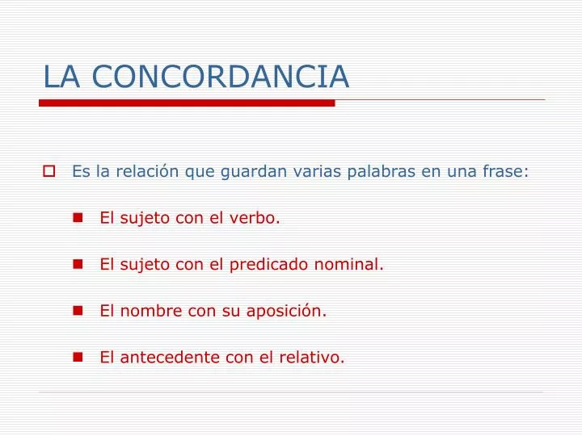

C O N C O R D A N C I A
La concordancia es la conformidad de accidentes gramaticales, la lógica entre los distintos elementos que debe regir para que un texto pueda interpretarse adecuadamente.
Es la coincidencia obligada de determinados accidentes gramaticales (género, número y persona) entre distintos elementos variables de la oración.
Se pueden distinguir dos tipos de concordancia:
a) Concordancia nominal (coincidencia de género y número). Es la que establece el sustantivo con el determinante y los adjetivos o los participios que lo modifican: la blancapaloma; esos libros viejos y estropeados.
b) Concordancia verbal (coincidencia de número y persona). Es la que se establece entre el verbo y su sujeto: Esos cantan muy bien.
